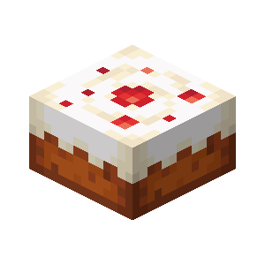

Cake Recipe

Description:
A delicious cake that one single slice restores 2 of hunger and 0.4 of saturation (have 7 slice), easy to do, does not need to be cooked, does not rot and you can feed pandas!.
Ingredients:
- 3 milk buckets
- 2 of sugar
- 1 egg
- 3 of wheat
Steps:
- Open your crafting table.
- Put the 3 buckets in the first three slots (slot one, slot two and slot three).
- Put one of sugar in the fourth slot.
- Put the egg in the fifth spot.
- Put the last of sugar in the sixth spot.
- Put the 3 of wheat in the last three slots (slot seven, slot eighth and slot nine).
- Pick up the cake that appears in the rigth.